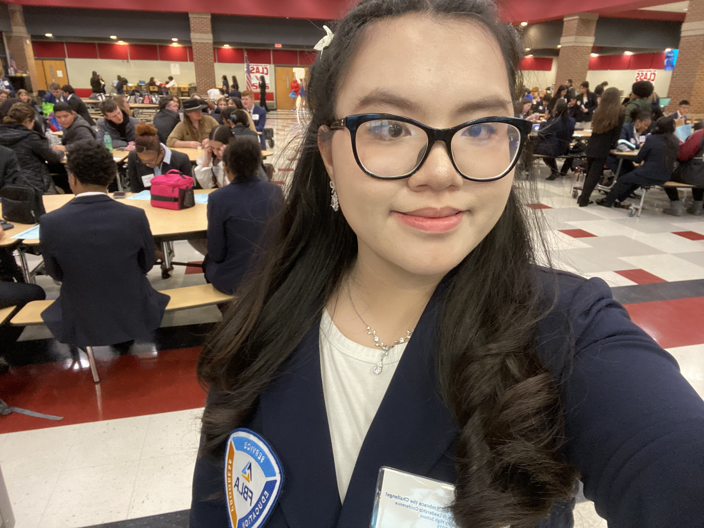

Kim Dang
Lawrenceville, Georgia Chapter President
Hey, I'm Kim Dang, and I'm a junior at Archer High School. Vietnamese is my first language, and learning English taught me how lonely it feels when the words won't come. I've always believed that the smallest act of kindness is worth more than the greatest intention.
From my perspective, I found out how effective it is to extend sympathy, offer compassion, consolation, and share a genuine smile. Joining Hearts for Healing provides me with the opportunity to demonstrate care to patients and communities in need.
I delight in music: V-pop, K-R&B, and I have a soft spot for K-dramas. My goal is ubiquitous: help people feel seen, in whatever language the heart understands.